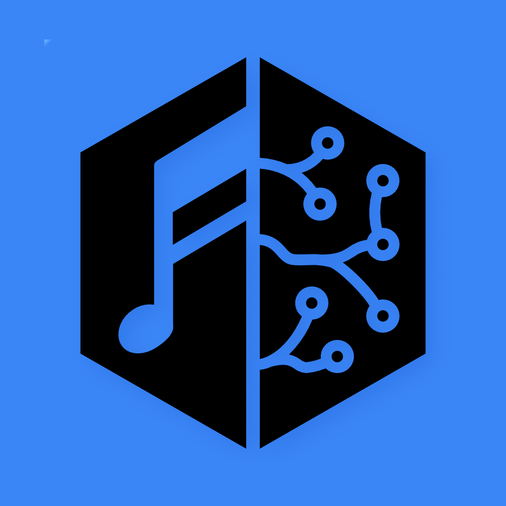

MusiCards
MusicBrainz Release Viewer & Player
About
Explore MusicBrainz releases, tracks, credits and artists. Connect your own music library to play matching tracks; MusiCards also works as a viewer without one. Available music is marked with a blue play symbol.
Available for iPhone, iPad and Apple silicon Mac with iOS, iPadOS or macOS 26 or later. View on the App Store.
Version 2.2
Play from Navidrome through a compatible UPnP/DLNA renderer, control its playback and volume, and pick up its current session from another device. Includes interface refinements and reliability improvements.
Help
Find music
- Enter an artist name, , release title to search releases, or artist, release for a combined search.
- Use the search switch to choose your library only or your library plus MusicBrainz.
- Paste a MusicBrainz release ID to find a specific edition, or open the album playing in Apple Music. On iPhone, you can also scan a CD barcode or identify music with Shazam.
Connect your library
On the home screen, open SOURCE and choose This device or Navidrome. MusicBrainz browsing works without connecting a library.
- Local folder: Tag albums with MusicBrainz Picard. On Mac, use Create / update library index on the home screen to prepare library.json. On iPhone or iPad, select the music folder containing that index. Only present files with matching MusicBrainz identifiers are playable.
- Navidrome: Enter your username, password and at least one server address: LOCAL for home-network access or REMOTE for https:// access away from home. LOCAL also accepts HTTP on a private network. MusicBrainz tags are required; library.json is not.
Play
Tap a blue play symbol beside a track, or on a release to queue its available tracks. In OUTPUT, choose System audio or UPnP Renderer. UPnP requires Navidrome, an active LOCAL connection and a compatible renderer that can reach that address. Select the renderer, then use PLAYER for playback, seeking and volume. Local FLAC, ALAC and AAC files play on this device; background playback and system media controls are available where supported.
Troubleshooting
- No play symbol? Check MusicBrainz tags and the active source. For a local folder, create the index again after changing files. For Navidrome, make sure its library scan has completed.
- Navidrome or renderer will not connect? Check the active server address and credentials. For UPnP, allow local-network access, connect both devices to the same network and check that the renderer can reach the LOCAL Navidrome address. Try deep search or a manual IP if discovery finds nothing.
- Slow start or interrupted playback? A cloud file may need to download first, or the Navidrome connection may be unstable. Check the current audio output if there is no sound.
- Shazam or barcode scanning unavailable? Check microphone or camera permission in iOS Settings.
Support
Questions and bug reports are welcome. For playback problems, include your device and OS version, music source, output or renderer model, audio format and a short description. Do not send passwords or authenticated stream URLs.
Privacy Policy
MusiCards has no developer account, advertising, analytics or telemetry. The developer does not receive your music files, listening history or Navidrome credentials.
App preferences, recent MusicBrainz content and the reference to your chosen local folder are stored on your device. A local index (library.json) stays in the selected music folder. Navidrome server details are saved locally; its password is stored in Apple Keychain. You can remove a Navidrome connection in the app, and delete a local index from its folder.
MusiCards contacts MusicBrainz, Cover Art Archive, Wikidata and Wikipedia for music information. Shazam and Apple Music Now Playing use Apple services where supported. Navidrome requests go directly to your chosen server using OpenSubsonic authentication over HTTPS, or HTTP for a configured private-network address. Search terms, music identifiers and related requests may reach these services. Your raw Navidrome password is not sent as an OpenSubsonic request parameter.
Microphone and camera access are used only when you start Shazam recognition or barcode scanning. Your local audio is read for playback and is not uploaded to the developer. UPnP discovers and controls players on your local network. Your selected renderer receives track metadata and an authenticated Navidrome stream URL and fetches the music directly; HTTP streams and reusable authentication tokens travel unencrypted on that network.
Attribution
Music metadata comes from MusicBrainz, whose core data is available under CC0. Artwork comes from the Cover Art Archive; individual images retain their respective rights. MusiCards includes libFLAC and libogg; their licence notices are in the app under About → Third-Party Licenses.